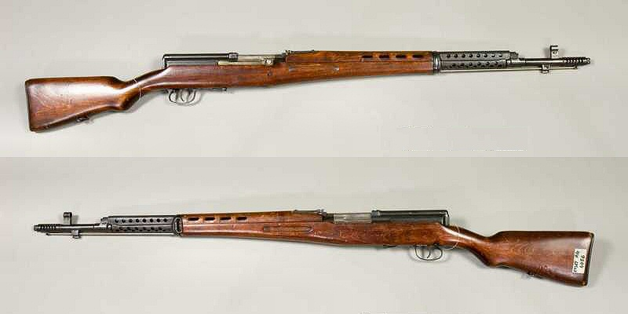

En la Segunda Guerra Mundial se utilizó una gran variedad de armas, desde ametralladoras ligeras hasta la bomba atómica. Los alemanes, viendo las falencias de su fuerza aérea, comenzaron a producir tanques y vehículos blindados. De esta forma tomaron el oeste de Rusia, Polonia y el norte de Francia.
Principales armas de la Segunda Guerra Mundial empleadas por el bando alemán y el bando aliado. Aviones, tanques y submarinos de la Segunda Guerra Mundial. La ametralladora más importante de la Segunda Guerra Mundial sigue siendo utilizada hoy en día por los ejércitos de la OTAN, incluido el español. Aunque se han introducido modificaciones, la MG42 sigue siendo la ametralladora fiable y de alta cadencia de tiro de hace medio siglo: podía efectuar entre 1.200 y 1.800 disparos por minuto de calibre 7.92 mm. No obstante, su consumo de munición también era su gran defecto, y no desbancó del todo a su antecesora, la MG34, que siguió siendo utilizada gracias a sus buenas prestaciones. Alemania comenzó a producir desde 1942 blindados pesados como el Tiger y el Panther. Con sendos cañones de 88 y 75 mm, respectivamente, su potencia de fuego no era una gran ventaja en enfrentamientos a corta distancia como los de Kursk, aunque sirvieron hasta el final de la guerra con eficacia allí donde participaron. Menos maniobrables y rápidos que los T-34 por su peso, pero muchísimo más blindado, el problema de Alemania era no poder remplazar los Tiger destruidos por su alto coste. No obstante, según cálculos de los Aliados, destruir uno de ellos costaba tres de sus propios carros de combate. Cuando el ministro de Exteriores soviético Viacheslav Molotov dijo durante la invasión de Finlandia (Guerra de Invierno, 1939-1940) que sus tropas les enviaban comida, la resistencia finesa respondió que entonces ellos tendrían que poner los 'cócteles'. Esta es una versión del origen del nombre de este arma, otra es que los propios soviéticos se lo pusieron cuando Molotov ordenó producir estos artefactos en masa. En cualquier caso, su utilización se remonta a la Guerra Civil española y sigue vigente hoy en día en cualquier guerra de guerrillas.
Fusil semiautomatico Gewehr 43: El Gewehr 43 o Karabiner 43 (G43, K43, Gew 43, Kar 43) fue un fusil semiautomático alemán desarrollado en la Segunda guerra mundial, a partir del G41 (W) pero usando un sistema de gas similar al del fusil soviético Tokarev SVT-40.

Armas Rusas de la Segunda Guerra Mundial Fusil semiautomático Tokarev T-40 El SVT-40 (siglas de Samozaryadnaya Vintovka Tokareva Obrazets 1940 goda; que significa Fusil Semiautomático Tokarev Modelo 1940) es un fusil semiautomático que entró en servicio durante la Segunda Guerra Mundial. Su diseño se remonta a inicios de los años 30.
Fusil Lebel 1886: El Lebel Modelo 1886 (siendo Fusil Modèle 1886-M93 su denominación oficial francesa) es un fusil de cerrojo calibre 8 mm que entró en servicio en el Ejército francés en abril de 1887.